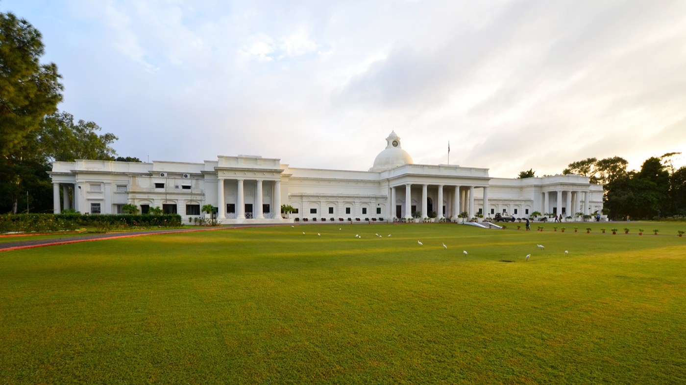

← index
where i'm from, the school i went to, and what i built before any of the work on the front page.
Early life
Where i'm from
bhagwanpur means "town of god": bhagwan is god and pur is town. it's in haridwar district, uttarakhand. people don't usually move there to start companies.
thirteen kilometres away is roorkee, home to iit roorkee . it was founded in 1847 to train surveyors for the ganges canal and is the oldest technical institution in asia. growing up near one of india's best engineering schools shaped what people around me thought success looked like.

it was built to train engineers for jobs, and around here that's still what doing well means: clear the exam, get the degree, get placed, earn a good salary. that's a sensible goal. a salary is the safest way out of a small town, and most families have good reasons to want safety.
but it meant most people around me were aiming for a high-paying job, not starting something. i picked up the idea of building my own thing from the internet, and had to keep explaining it at dinner to family who thought it was a mistake.
The school
i studied at dps roorkee. this is less about the school than about what the system rewards.
most students there worked very hard for marks, and the marks didn't lead anywhere in particular. a high score doesn't require you to make anything or be curious about anything. you can do very well and finish school without having built anything or knowing what you like.
i wasn't better than anyone there. i just found out early that making something and watching a stranger use it felt better than a rank, and that was partly luck.
Things i built at school
- mined litecoin at 14 on gaming laptops, in a town with unreliable power. it didn't make money. i learned about thermal throttling over one hot summer, and that electricity costs money. it was also the first time i saw that a computer could earn while i slept.
- at ~15 i built a bot that created signups for grammarly's affiliate programme and made about $800 before it stopped working. it was fake traffic and i wouldn't do it now. it did teach me that any system with a payout will get tested by someone, even a fifteen-year-old with free time.
- built a high-frequency trading bot for solana that read the chain, looked for price gaps and traded automatically. it taught me about latency, and how fast an edge disappears once others find it.
- sold solar panels at 16, in person, to adults. the objection was rarely the product. it was the first time i sat in someone's living room, got told no, and went on to the next house. most of what i know about sales started there.
- worked with not your type at 14, an indian animation channel with millions of subscribers. i learned that you can email someone with a big audience and sometimes they reply, and i've used that ever since.
none of this was planned. for five years i tried things to see what paid. it was slow, but it was how i could learn what works online from where i was.